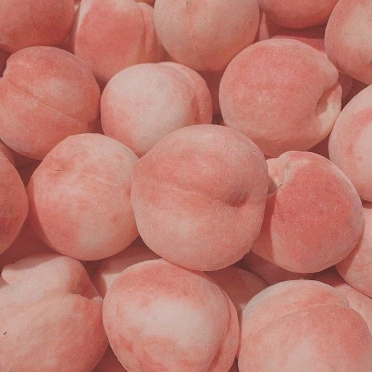

Frontend
HTML5
CSS3
JavaScript
TypeScript
React
Vite
Tailwind CSS

김수정 peachily
특수교사
안녕하세요.
현재 초등학교에서 특수교사로 일하고 있는 김수정입니다.
교육 현장에서 학생들을 만나며 각자의 특성과 필요에 맞는 배움의 환경을 만드는 일에 관심을 가져왔습니다. 특히 장애 학생들이 학교와 일상 속에서 자연스럽게 소속감을 느끼고, 다양한 경험을 통해 자신의 가능성을 넓혀 갈 수 있기를 바랍니다.
이러한 관심을 바탕으로 프로그래밍을 공부하기 시작했습니다. 학생들을 위한 학습 도구와 교사의 업무를 돕는 서비스를 직접 만들어 보고 있으며, 최근에는 특수교육 현장의 협업 문제를 해결하기 위한 서비스 ‘마디(MADI)’를 팀과 함께 기획하고 있습니다.
개발 외에도 새로운 분야를 배우고 경험하는 것을 좋아합니다. 콘텐츠 제작을 비롯한 다양한 활동에서 얻은 경험들이 교육을 바라보는 시야를 넓혀 준다고 생각합니다.
교육 현장에서 발견한 작은 필요들을
하나씩 구체적인 결과물로 만들어 가고 싶습니다.
함께 나누고 싶은 이야기가 있다면 연락해 주세요.